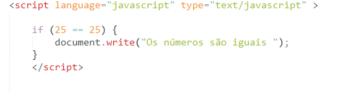

Estrutura condiconal IF
Para que usamos o IF?
O IF é uma estrutura de controle utilizada para tomar decisões, é também capaz de realizar uma ou mais operações em função de uma expressão na forma de condição. Primeiro é dada uma condição e caso a mesma seja positiva, ele executa a ação.
A estrutura básica do IF em Javascript é :
If( condição){
Código a ser executado
}
Essa condição é feita por operadores lógicos como maior, menor, menor igual, igual, maior igual e diferente, podendo também podem ser usados ou não em conjuntos com E ou e OU.

No exemplo fizemos uma condição verificando se um número é igual ao outro, como a condição foi verdadeira usamos a document.write para imprimir uma mensagem na tela informando o usuário.No exemplo usado a condição sempre será verdadeira mas se caso a condição não fosse, iríamos fazer o que ? Para isso iremos definir um comando caso a condição não seje verdadeira, que no caso esse comando seria o else.
Para que usamos o ELSE ?
O else serve basicamente para suprir a sentença negativa da condição do IF, portanto quando a condição do IF for falsa o ELSE assume posição para executar a ação.
Sua estrutura é quase igual ao do IF, com uma pequena diferença:
No IF:
If( condição){
Código a ser executado
}
No Else:
else{
código executado se for falso
}
Para não confundir sua cabeça irei usar como exemplo o mesmo código usado no IF, com a pequena diferença que vamos implementar o ELSE .

Como podemos observar no código acima no exemplo os números não são iguais, sendo assim a condição ELSE irá ser executada. Essa demonstração foi bem básica pois como podemos ver, os valores já havia sido escolhido, mas essa estrutura é extremamente útil quando os valores vem de variáveis, pois ai os valores irão ser desconhecidos.